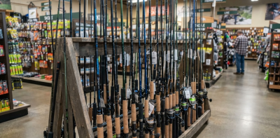
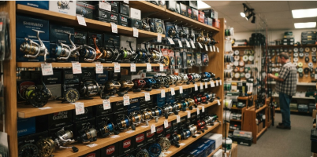
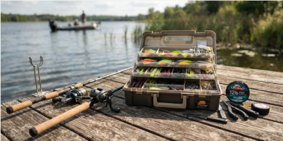
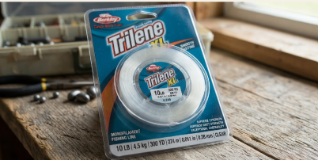
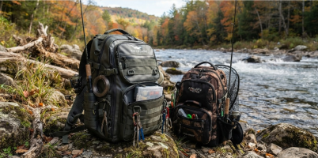
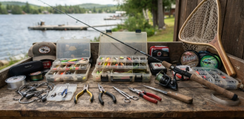

OUTFITTED FOR SUCCESS
Gear & Tackle
The right gear makes every fishing trip better. Explore the essential equipment you need to get ready for your next day on the water.

Fishing Rods
For freshwater, a 6-7 ft medium rod works well for bass and panfish. For inshore saltwater, try a 7 ft medium-heavy rod for redfish, trout, and flounder.

Fishing Reels
A 2500-3000 size spinning reel is a good choice for most freshwater fishing. For saltwater, use a 3000-4000 size reel that can handle larger fish and heavier line.

Tackle & Bait
Try worms, crankbaits, and soft plastics for freshwater bass. For saltwater, shrimp, mullet, jig heads, and paddle-tail soft plastics are great choices.

Fishing Line
Use 8-12 lb line for most freshwater fishing. For inshore saltwater fishing, 15-20 lb braided line with a fluorocarbon leader is a good setup.

Fishing Bags
Carry a small tackle bag with extra hooks, weights, lures, and line. For saltwater trips, choose a bag that is easy to clean after being around sand and saltwater.

Fishing Accessories
Bring pliers, line cutters, a landing net, and polarized sunglasses. For saltwater fishing, also carry fish grips and rinse your gear with fresh water after each trip.